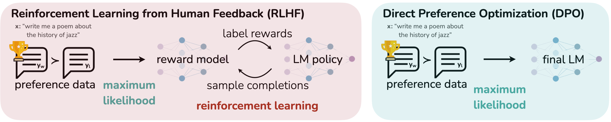
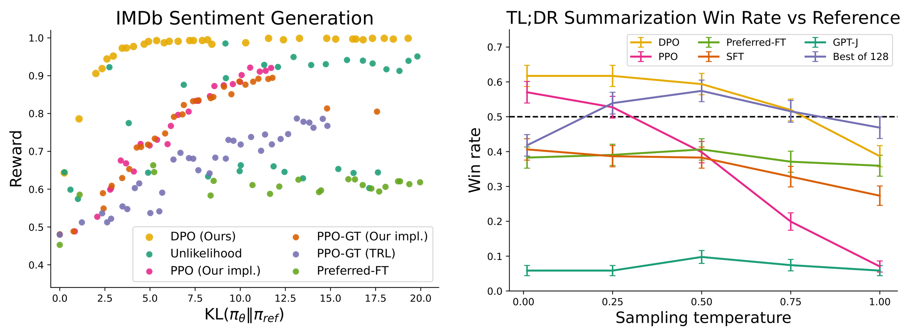
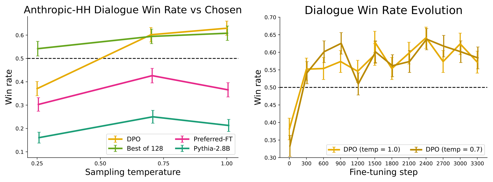
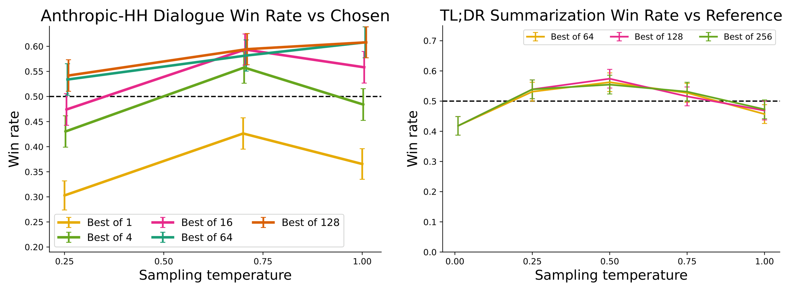

🎮 费曼一分钟（通俗速读）
RLHF 要先训一个奖励模型，再用 PPO 在「奖励」上做强化学习——两步、两个模型、还要在训练中反复采样，既贵又不稳。DPO 发现：在 KL 约束下最大化奖励的最优策略有闭式解 $\pi_r \propto \pi_{\text{ref}}\exp(r/\beta)$，把它反解出来就得到 $r=\beta\log(\pi/\pi_{\text{ref}})+\beta\log Z$。奖励只以「差」的形式出现在 Bradley-Terry 模型里，$Z$ 正好抵消——于是「训练奖励模型 + RL」被一个二分类交叉熵损失取代：让「好回答相对差回答的对数概率比」尽量大。梯度还会自动给「判错的样本」更大权重，防止模型退化。像不请教练（奖励模型）也不反复试跑（RL），直接拿「人类更喜欢 A 而不是 B」的成对数据做分类。
Abstract
While large-scale unsupervised language models (LMs) learn broad world knowledge and some reasoning skills, achieving precise control of their behavior is difficult due to the completely unsupervised nature of their training. Existing methods for gaining such steerability collect human labels of the relative quality of model generations and fine-tune the unsupervised LM to align with these preferences, often with reinforcement learning from human feedback (RLHF).
However, RLHF is a complex and often unstable procedure, first fitting a reward model that reflects the human preferences, and then fine-tuning the large unsupervised LM using reinforcement learning to maximize this estimated reward without drifting too far from the original model.
In this paper we introduce a new parameterization of the reward model in RLHF that enables extraction of the corresponding optimal policy in closed form, allowing us to solve the standard RLHF problem with only a simple classification loss.
大规模无监督语言模型（LM）虽然学到了广泛的世界知识与一定的推理能力，但由于训练完全无监督，精确控制其行为仍然困难。现有获得这种可控性的方法，是收集人类对模型生成结果相对质量的标注，并微调无监督 LM 以对齐这些偏好，通常采用基于人类反馈的强化学习（RLHF）。
然而，RLHF 是一个复杂且常常不稳定的流程：先拟合一个反映人类偏好的奖励模型，再用强化学习微调大型无监督 LM，在最大化估计奖励的同时不要偏离原始模型太远。
本文提出 RLHF 中奖励模型的一种新参数化，使得可以闭式地提取对应的最优策略，从而仅用一个简单的分类损失就能求解标准 RLHF 问题。
三段式结构
① 问题：无监督训练 → 行为不可控；② 现状：RLHF 有效但复杂不稳定；③ 方案：换参数化 → 闭式最优策略 → 分类损失。
关键措辞
「closed form」与「simple classification loss」是全文的两个卖点：前者是数学洞察，后者是工程收益。
与后文对应
闭式解 = 式 (4)；分类损失 = 式 (7)；稳定性 = §5.2 对 actor-critic 的分析。
The resulting algorithm, which we call Direct Preference Optimization (DPO), is stable, performant, and computationally lightweight, eliminating the need for fitting a reward model, sampling from the LM during fine-tuning or performing significant hyperparameter tuning. Our experiments show that DPO can fine-tune LMs to align with human preferences as well as or better than existing methods.
Notably, fine-tuning with DPO exceeds PPO-based RLHF in ability to control sentiment of generations, and matches or improves response quality in summarization and single-turn dialogue while being substantially simpler to implement and train.
由此得到的算法我们称为直接偏好优化（DPO），它稳定、性能好、计算轻量，无需拟合奖励模型、无需在微调过程中从 LM 采样，也无需大量超参调优。实验表明，DPO 能让 LM 对齐人类偏好，效果与现有方法相当或更好。
值得注意的是，DPO 微调在控制生成情感方面超过基于 PPO 的 RLHF，在摘要与单轮对话上达到或超过其响应质量，而实现与训练都显著更简单。
三项「消除」
不训奖励模型、不采样、不调参——每项都对应 RLHF 流水线中的一个成本中心。
证据强度
「exceeds」只用于情感控制（有真值奖励可测）；摘要/对话用「matches or improves」，措辞更保守，因为依赖 GPT-4 评判。
阅读提示
摘要没有提「6B 参数」「β 敏感性」「OOD」等边界，这些在 §6 与 §7 才出现。
1. Introduction
Large unsupervised language models (LMs) trained on very large datasets acquire surprising capabilities. However, these models are trained on data generated by humans with a wide variety of goals, priorities, and skillsets. Some of these goals and skillsets may not be desirable to imitate; for example, while we may want our AI coding assistant to understand common programming mistakes in order to correct them, nevertheless, when generating code, we would like to bias our model toward the (potentially rare) high-quality coding ability present in its training data.
Similarly, we might want our language model to be aware of a common misconception believed by 50% of people, but we certainly do not want the model to claim this misconception to be true in 50% of queries about it! In other words, selecting the model's desired responses and behavior from its very wide knowledge and abilities is crucial to building AI systems that are safe, performant, and controllable.
While existing methods typically steer LMs to match human preferences using reinforcement learning (RL), we will show that the RL-based objective used by existing methods can be optimized exactly with a simple binary cross-entropy objective, greatly simplifying the preference learning pipeline.
在超大规模数据上训练的无监督语言模型获得了惊人的能力。然而，这些模型是在具有各种目标、优先级与技能水平的人类生成数据上训练的。其中某些目标与技能并不值得模仿；例如，我们希望 AI 编程助手理解常见编程错误以便纠正，但在生成代码时，我们希望模型偏向训练数据中（可能稀少的）高质量编码能力。
类似地，我们可能希望语言模型知道有 50% 的人相信的常见误解，但绝不希望模型在相关提问中有 50% 的概率把这个误解说成真的！换言之，从模型广博的知识与能力中挑选出期望的响应与行为，对构建安全、高性能、可控的 AI 系统至关重要。
现有方法通常用强化学习（RL）引导 LM 匹配人类偏好，而本文将说明：现有方法所用的基于 RL 的目标，可以用一个简单的二元交叉熵目标精确优化，从而大幅简化偏好学习流水线。
两个类比
「懂错误」≠「写错误代码」；「知道误解」≠「复述误解」。用来说明：知识覆盖 ≠ 行为选择。
论证角色
先建立「行为选择是核心问题」，再指出「RL 是现有解法」，最后抛出「其实可以不用 RL」——为全文定调。
潜在质疑
「exactly」一词很强：DPO 优化的是同一目标的等价形式，但前提是 BT 模型与离线数据分布成立，见 §5。

At a high level, existing methods instill the desired behaviors into a language model using curated sets of human preferences. This preference learning stage occurs after an initial stage of large-scale unsupervised pre-training. While the most straightforward approach is supervised fine-tuning on human demonstrations of high quality responses, the most successful class of methods is reinforcement learning from human (or AI) feedback (RLHF/RLAIF). RLHF methods fit a reward model to a dataset of human preferences and then use RL to optimize a language model policy to produce responses assigned high reward without drifting excessively far from the original model.
While RLHF produces models with impressive conversational and coding abilities, the RLHF pipeline is considerably more complex than supervised learning, involving training multiple LMs and sampling from the LM policy in the loop of training, incurring significant computational costs.
概括地说，现有方法用精心收集的人类偏好集合把期望行为注入语言模型。这一偏好学习阶段发生在大规模无监督预训练之后。最直接的做法是在高质量人类示范上做监督微调，而最成功的一类方法是基于人类（或 AI）反馈的强化学习（RLHF/RLAIF）。RLHF 先在人类偏好数据上拟合奖励模型，再用 RL 优化语言模型策略，使其产出高奖励响应，同时不过度偏离原始模型。
尽管 RLHF 产出的模型在对话与编码能力上令人印象深刻，但RLHF 流水线比监督学习复杂得多：需要训练多个 LM，并在训练循环中从 LM 策略采样，带来显著计算开销。
RLHF 的三份开销
① 额外训练奖励模型；② 训练中在线采样（rollout）；③ 多模型并存（policy / ref / reward / value）。
对比基线
SFT 只需一次监督训练；DPO 也只需一次监督式训练，这正是它「简单」的参照系。
隐含前提
「复杂 = 不好」是工程论证；论文随后还需证明 DPO 在效果上不输，才构成完整论证。
In this paper, we show how to directly optimize a language model to adhere to human preferences, without explicit reward modeling or reinforcement learning. We propose Direct Preference Optimization (DPO), an algorithm that implicitly optimizes the same objective as existing RLHF algorithms (reward maximization with a KL-divergence constraint) but is simple to implement and straightforward to train.
Intuitively, the DPO update increases the relative log probability of preferred to dispreferred responses, but it incorporates a dynamic, per-example importance weight that prevents the model degeneration that we find occurs with a naive probability ratio objective. Like existing algorithms, DPO relies on a theoretical preference model (such as the Bradley-Terry model) that measures how well a given reward function aligns with empirical preference data.
However, while existing methods use the preference model to define a preference loss to train a reward model and then train a policy that optimizes the learned reward model, DPO uses a change of variables to define the preference loss as a function of the policy directly.
本文展示如何直接优化语言模型以遵循人类偏好，而无需显式奖励建模或强化学习。我们提出直接偏好优化（DPO）：它隐式地优化与现有 RLHF 算法相同的目标（带 KL 散度约束的奖励最大化），但实现与训练都更简单。
直观上，DPO 的更新提高「偏好响应相对非偏好响应」的对数概率，但其中包含一个动态的、逐样本的重要性权重，可防止「朴素概率比目标」导致的模型退化。与现有算法一样，DPO 依赖一个理论偏好模型（如 Bradley-Terry 模型）来衡量奖励函数与经验偏好数据的契合度。
不过，现有方法用偏好模型定义损失来训练奖励模型、再训练策略去优化该奖励；DPO 则通过变量替换，把偏好损失直接写成策略的函数。
核心机制
变量替换：$r \to \beta\log(\pi/\pi_{\text{ref}})$。奖励不再是独立网络，而是策略的「影子」。
重要性权重
$\sigma(\hat r_\theta(y_l)-\hat r_\theta(y_w))$：模型把差回答排得越高，权重越大——自动聚焦「判错」的样本。
与朴素做法的区别
只最大化 $\log\pi(y_w)-\log\pi(y_l)$（Unlikelihood）会让模型退化，附录 Table 8 有对照。
2. Related Work
Self-supervised language models of increasing scale learn to complete some tasks zero-shot or with few-shot prompts. However, their performance on downstream tasks and alignment with user intent can be significantly improved by fine-tuning on datasets of instructions and human-written completions. This `instruction-tuning' procedure enables LLMs to generalize to instructions outside of the instruction-tuning set and generally increase their usability.
Despite the success of instruction tuning, relative human judgments of response quality are often easier to collect than expert demonstrations, and thus subsequent works have fine-tuned LLMs with datasets of human preferences, improving proficiency in translation, summarization, story-telling, and instruction-following. These methods first optimize a neural network reward function for compatibility with the dataset of preferences under a preference model such as the Bradley-Terry model, then fine-tune a language model to maximize the given reward using reinforcement learning algorithms, commonly REINFORCE, proximal policy optimization (PPO), or variants.
规模递增的自监督语言模型学会了零样本或少样本完成某些任务。然而，在下游任务上的表现与对用户意图的对齐，可以通过在指令与人类撰写完成的数据集上微调而显著提升。这种「指令微调」过程使 LLM 能泛化到指令微调集之外的指令，并普遍提升可用性。
尽管指令微调成功，但人类对响应质量的相对判断通常比专家示范更容易收集，因此后续工作用人类偏好数据集微调 LLM，在翻译、摘要、讲故事与指令遵循上取得提升。这些方法先在 Bradley-Terry 等偏好模型下优化神经网络奖励函数以拟合偏好数据，再用强化学习算法（常见的有 REINFORCE、PPO 及其变体）微调语言模型以最大化给定奖励。
两条脉络
① 指令微调（SFT）→ ② 偏好微调（RLHF）。DPO 属于后者，但去掉了 RL 环节。
为什么用相对偏好
「A 比 B 好」比「写出标准答案」便宜且更贴近人类真实判断，尤其对开放式生成。
本文位置
不是提出新偏好模型，而是证明「在 BT 模型下，偏好学习可以不做 RL」。
Outside of the context of language, learning policies from preferences has been studied in both bandit and reinforcement learning settings. Contextual bandit learning using preferences or rankings of actions, rather than rewards, is known as a contextual dueling bandit (CDB). In the absence of absolute rewards, theoretical analysis of CDBs substitutes the notion of an optimal policy with a von Neumann winner, a policy whose expected win rate against any other policy is at least 50%.
However, in the CDB setting, preference labels are given online, while in learning from human preferences, we typically learn from a fixed batch of offline preference-annotated action pairs. Similarly, preference-based RL (PbRL) learns from binary preferences generated by an unknown `scoring' function rather than rewards. Various algorithms for PbRL exist, including methods that can reuse off-policy preference data, but generally involve first explicitly estimating the latent scoring function (i.e. the reward model) and subsequently optimizing it. We instead present a single stage policy learning approach that directly optimizes a policy to satisfy preferences.
在语言之外，从偏好学习策略已在 bandit 与强化学习场景中被研究。用偏好或动作排序（而非奖励）做上下文 bandit 学习，称为上下文对决 bandit（CDB）。在缺少绝对奖励时，CDB 的理论分析用 von Neumann 胜者替代最优策略概念：该策略对任意其他策略的期望胜率至少 50%。
然而 CDB 中偏好标签是在线给出的，而从人类偏好学习通常基于固定的离线偏好动作对批次。类似地，基于偏好的 RL（PbRL）从由未知「打分」函数产生的二元偏好中学习。PbRL 有多种算法，包括可复用离策略偏好数据的方法，但通常都要先显式估计潜在打分函数（即奖励模型）再优化。我们则提出单阶段策略学习方法，直接优化策略以满足偏好。
CDB / PbRL 的共性
都假设「偏好由潜在打分函数生成」，都面临「没有绝对奖励」的问题。
关键差异
CDB 在线交互；PbRL 多为离线但需显式奖励估计；DPO 离线且跳过奖励估计。
理论借用
BT 模型与「奖励等价类」思想来自这一脉络，DPO 把它用于策略参数化。
3. Preliminaries
We review the RLHF pipeline. It usually includes three phases: 1) supervised fine-tuning (SFT); 2) preference sampling and reward learning; and 3) RL optimization.
SFT: RLHF typically begins by fine-tuning a pre-trained LM with supervised learning on high-quality data for the downstream task(s) of interest (dialogue, summarization, etc.), to obtain a model $\pi^{\text{SFT}}$.
Reward Modelling Phase: In the second phase the SFT model is prompted with prompts $x$ to produce pairs of answers $(y_1, y_2)\sim\pi^{\text{SFT}}(y\mid x)$. These are then presented to human labelers who express preferences for one answer, denoted as $y_w\succ y_l\mid x$ where $y_w$ and $y_l$ denote the preferred and dispreferred completion amongst $(y_1, y_2)$ respectively.
The preferences are assumed to be generated by some latent reward model $r^*(y, x)$, which we do not have access to. There are a number of approaches used to model preferences, the Bradley-Terry (BT) model being a popular choice (although more general Plackett-Luce ranking models are also compatible with the framework if we have access to several ranked answers). The BT model stipulates that the human preference distribution $p^*$ can be written as:
$$p^*(y_1\succ y_2\mid x)=\frac{\exp\left(r^*(x,y_1)\right)}{\exp\left(r^*(x,y_1)\right)+\exp\left(r^*(x,y_2)\right)} \tag{1}$$
我们回顾 RLHF 流水线，它通常包括三个阶段：1）监督微调（SFT）；2）偏好采样与奖励学习；3）RL 优化。
SFT：RLHF 通常先在下游任务（对话、摘要等）的高质量数据上对预训练 LM 做监督微调，得到模型 $\pi^{\text{SFT}}$。
奖励建模阶段：第二阶段用提示 $x$ 让 SFT 模型生成成对回答 $(y_1,y_2)\sim\pi^{\text{SFT}}(y\mid x)$，交给人类标注者表达偏好，记为 $y_w\succ y_l\mid x$，其中 $y_w$、$y_l$ 分别是 $(y_1,y_2)$ 中被偏好与被嫌弃的完成。
偏好被假设由某个我们无法获得的潜在奖励模型 $r^*(y,x)$ 生成。建模偏好的方法有多种，Bradley-Terry（BT）模型是流行选择（若能获得多个排序答案，更一般的 Plackett-Luce 排序模型也兼容该框架）。BT 模型规定人类偏好分布 $p^*$ 可写为：
$$p^*(y_1\succ y_2\mid x)=\frac{\exp\left(r^*(x,y_1)\right)}{\exp\left(r^*(x,y_1)\right)+\exp\left(r^*(x,y_2)\right)} \tag{1}$$
三阶段流水线
SFT → 偏好标注 + 奖励建模 → RL 微调。DPO 只保留第 1 阶段的数据与第 2 阶段的偏好对，跳过奖励网络与 RL。
BT 模型的含义
偏好概率 = 两个奖励的 sigmoid 差：$p^*=\sigma(r^*(x,y_1)-r^*(x,y_2))$。奖励的绝对尺度不重要，只有差有意义——这是后文 $Z(x)$ 能抵消的前提。
记号
$y_w$ = preferred (winner)，$y_l$ = dispreferred (loser)；$\succ$ 表示「优于」。
Assuming access to a static dataset of comparisons $\mathcal{D}=\{x^{(i)}, y_w^{(i)}, y_l^{(i)}\}_{i=1}^N$ sampled from $p^*$, we can parametrize a reward model $r_\phi(x,y)$ and estimate the parameters via maximum likelihood. Framing the problem as a binary classification we have the negative log-likelihood loss:
$$\mathcal{L}_R(r_\phi,\mathcal{D})=-\mathbb{E}_{(x,y_w,y_l)\sim\mathcal{D}}\left[\log\sigma\left(r_\phi(x,y_w)-r_\phi(x,y_l)\right)\right] \tag{2}$$
where $\sigma$ is the logistic function. In the context of LMs, the network $r_\phi(x,y)$ is often initialized from the SFT model $\pi^{\text{SFT}}(y\mid x)$ with the addition of a linear layer on top of the final transformer layer that produces a single scalar prediction for the reward value. To ensure a reward function with lower variance, prior works normalize the rewards, such that $\mathbb{E}_{x,y\sim\mathcal{D}}\left[r_\phi(x,y)\right]=0$ for all $x$.
假设可访问从 $p^*$ 采样的静态比较数据集 $\mathcal{D}=\{x^{(i)},y_w^{(i)},y_l^{(i)}\}_{i=1}^N$，我们可以参数化奖励模型 $r_\phi(x,y)$ 并用最大似然估计参数。把问题视为二元分类，得到负对数似然损失：
$$\mathcal{L}_R(r_\phi,\mathcal{D})=-\mathbb{E}_{(x,y_w,y_l)\sim\mathcal{D}}\left[\log\sigma\left(r_\phi(x,y_w)-r_\phi(x,y_l)\right)\right] \tag{2}$$
其中 $\sigma$ 是 logistic 函数。在 LM 场景中，网络 $r_\phi(x,y)$ 常从 SFT 模型 $\pi^{\text{SFT}}(y\mid x)$ 初始化，并在最后一层 transformer 之上加一个线性层，输出单个标量奖励值。为保证奖励方差更低，先前工作会对奖励做归一化，使对所有 $x$ 有 $\mathbb{E}_{x,y\sim\mathcal{D}}\left[r_\phi(x,y)\right]=0$。
式 (2) 与式 (7) 的同构
两者都是「$\log\sigma(\text{差})$」：式 (2) 的差是奖励差，式 (7) 的差是策略对数比之差。DPO 的全部魔法就在这个替换。
归一化细节
$\mathbb{E}[r_\phi]=0$ 是为了降低方差；DPO 不需要这一步，因为隐式奖励自带「参考策略」基准。
工程成本
奖励模型通常与策略同规模（甚至更大），训练 + 推理都是额外开销。
RL Fine-Tuning Phase: During the RL phase, the learned reward function is used to provide feedback to the language model. Following prior works, the optimization is formulated as
$$\max_{\pi_\theta}\;\mathbb{E}_{x\sim\mathcal{D},\,y\sim\pi_\theta(y\mid x)}\left[r_\phi(x,y)\right]-\beta\,\mathbb{D}_{\mathrm{KL}}\left[\pi_\theta(y\mid x)\,\|\,\pi^{\text{ref}}(y\mid x)\right] \tag{3}$$
where $\beta$ is a parameter controlling the deviation from the base reference policy $\pi^{\text{ref}}$, namely the initial SFT model $\pi^{\text{SFT}}$. In practice, the language model policy $\pi_\theta$ is also initialized to $\pi^{\text{SFT}}$.
The added constraint is important, as it prevents the model from deviating too far from the distribution on which the reward model is accurate, as well as maintaining the generation diversity and preventing mode-collapse to single high-reward answers. Due to the discrete nature of language generation, this objective is not differentiable and is typically optimized with reinforcement learning.
The standard approach has been to construct the reward function $r(x,y)=r_\phi(x,y)-\beta\left(\log\pi_\theta(y\mid x)-\log\pi^{\text{ref}}(y\mid x)\right)$, and maximize using PPO.
RL 微调阶段：在 RL 阶段，学到的奖励函数为语言模型提供反馈。沿用先前工作，优化目标为
$$\max_{\pi_\theta}\;\mathbb{E}_{x\sim\mathcal{D},\,y\sim\pi_\theta(y\mid x)}\left[r_\phi(x,y)\right]-\beta\,\mathbb{D}_{\mathrm{KL}}\left[\pi_\theta(y\mid x)\,\|\,\pi^{\text{ref}}(y\mid x)\right] \tag{3}$$
其中 $\beta$ 控制相对基准参考策略 $\pi^{\text{ref}}$（即初始 SFT 模型 $\pi^{\text{SFT}}$）的偏离程度。实践中语言模型策略 $\pi_\theta$ 也初始化为 $\pi^{\text{SFT}}$。
该约束很重要：它防止模型偏离奖励模型仍然准确的分布太远，同时保持生成多样性、防止坍缩到单一高奖励答案。由于语言生成是离散的，该目标不可微，通常用强化学习优化。
标准做法是构造奖励函数 $r(x,y)=r_\phi(x,y)-\beta\left(\log\pi_\theta(y\mid x)-\log\pi^{\text{ref}}(y\mid x)\right)$，并用 PPO 最大化。
两个作用
① 奖励模型只在参考分布附近可信；② KL 项防止 mode collapse（都去生成同一句「高奖励」）。
为什么必须 RL
期望是对 $\pi_\theta$ 采样的 $y$ 取的，梯度要穿过采样，离散序列不可直接反传——于是需要策略梯度。
PPO 的实际形态
把 KL 并入奖励（per-token 惩罚），再用 PPO 的裁剪目标优化；这正是 DPO 要绕开的部分。
4. Direct Preference Optimization
Motivated by the challenges of applying reinforcement learning algorithms on large-scale problems such as fine-tuning language models, our goal is to derive a simple approach for policy optimization using preferences directly. Unlike prior RLHF methods, which learn a reward and then optimize it via RL, our approach leverages a particular choice of reward model parameterization that enables extraction of its optimal policy in closed form, without an RL training loop.
Our key insight is to leverage an analytical mapping from reward functions to optimal policies, which enables us to transform a loss function over reward functions into a loss function over policies. This change-of-variables approach avoids fitting an explicit, standalone reward model, while still optimizing under existing models of human preferences, such as the Bradley-Terry model. In essence, the policy network represents both the language model and the (implicit) reward.
Deriving the DPO objective. We start with the same RL objective as prior work, Eq. (3), under a general reward function $r$. It is straightforward to show that the optimal solution to the KL-constrained reward maximization objective takes the form:
$$\pi_r(y\mid x)=\frac{1}{Z(x)}\pi^{\text{ref}}(y\mid x)\exp\left(\frac{1}{\beta}r(x,y)\right) \tag{4}$$
where $Z(x)=\sum_y \pi^{\text{ref}}(y\mid x)\exp\left(\frac{1}{\beta}r(x,y)\right)$ is the partition function.
受「把强化学习用于语言模型微调这类大规模问题」的挑战驱动，我们的目标是推导一种直接用偏好做策略优化的简单方法。与先学奖励再用 RL 优化的既有 RLHF 方法不同，我们的方法利用一种特定的奖励模型参数化，从而可以闭式地提取其最优策略，无需 RL 训练循环。
我们的关键洞察是利用从奖励函数到最优策略的解析映射，从而把「定义在奖励函数上的损失」变换为「定义在策略上的损失」。这种变量替换避免了拟合显式、独立的奖励模型，同时仍在 Bradley-Terry 等现有人类偏好模型下优化。本质上，策略网络同时表示语言模型与（隐式）奖励。
推导 DPO 目标。我们从与先前工作相同的 RL 目标（式 (3)）出发，奖励函数为一般的 $r$。可以证明，带 KL 约束的奖励最大化目标的最优解具有如下形式：
$$\pi_r(y\mid x)=\frac{1}{Z(x)}\pi^{\text{ref}}(y\mid x)\exp\left(\frac{1}{\beta}r(x,y)\right) \tag{4}$$
其中 $Z(x)=\sum_y \pi^{\text{ref}}(y\mid x)\exp\left(\frac{1}{\beta}r(x,y)\right)$ 是配分函数。
式 (4) 从哪来
对 $\max_\pi \mathbb{E}_\pi[r]-\beta\,\mathrm{KL}(\pi\|\pi_{\text{ref}})$ 用拉格朗日乘子或「控制即推断」可得：最优策略是参考策略按 $\exp(r/\beta)$ 重新加权后的归一化分布。
β 的作用
$\beta\to 0$：完全追求奖励，$\pi_r$ 趋向把概率质量压到 argmax 奖励；$\beta\to\infty$：退化为 $\pi_{\text{ref}}$。所以 $\beta$ 是「听话程度」的旋钮。
难点
$Z(x)$ 要对所有可能序列求和，语言空间指数级，无法精确计算——所以不能直接用式 (4) 采样。DPO 的下一步正是绕开它。
Even if we use the MLE estimate $r_\phi$ of the ground-truth reward function $r^*$, it is still expensive to estimate the partition function $Z(x)$, which makes this representation hard to utilize in practice. However, we can rearrange Eq. (4) to express the reward function in terms of its corresponding optimal policy $\pi_r$, the reference policy $\pi^{\text{ref}}$, and the unknown partition function $Z(\cdot)$. Specifically, we first take the logarithm of both sides and then with some algebra we obtain:
$$r(x,y)=\beta\log\frac{\pi_r(y\mid x)}{\pi^{\text{ref}}(y\mid x)}+\beta\log Z(x) \tag{5}$$
We can apply this reparameterization to the ground-truth reward $r^*$ and corresponding optimal model $\pi^*$. Fortunately, the Bradley-Terry model depends only on the difference of rewards between two completions, i.e., $p^*(y_1\succ y_2\mid x)=\sigma\left(r^*(x,y_1)-r^*(x,y_2)\right)$. Substituting Eq. (5) into Eq. (1), the partition function cancels, and we can express the human preference probability in terms of only the optimal policy $\pi^*$ and reference policy $\pi^{\text{ref}}$.
即使使用真值奖励函数 $r^*$ 的 MLE 估计 $r_\phi$，估计配分函数 $Z(x)$ 仍然昂贵，使该表示难以实用。不过，我们可以重排式 (4)，把奖励函数表示为对应最优策略 $\pi_r$、参考策略 $\pi^{\text{ref}}$ 与未知配分函数 $Z(\cdot)$ 的函数。具体地，先对两边取对数，再整理可得：
$$r(x,y)=\beta\log\frac{\pi_r(y\mid x)}{\pi^{\text{ref}}(y\mid x)}+\beta\log Z(x) \tag{5}$$
我们可以把该重参数化用于真值奖励 $r^*$ 与对应最优模型 $\pi^*$。幸运的是，Bradley-Terry 模型只依赖两个完成之间的奖励差，即 $p^*(y_1\succ y_2\mid x)=\sigma\left(r^*(x,y_1)-r^*(x,y_2)\right)$。把式 (5) 代入式 (1)，配分函数被抵消，于是人类偏好概率可以只用最优策略 $\pi^*$ 与参考策略 $\pi^{\text{ref}}$ 表示。
反解奖励
式 (5) 把「奖励」变成「策略相对参考策略的对数比 + 常数」。这一步是全文枢纽：奖励不再需要单独的网络。
为什么 Z 会消失
$r(x,y_w)-r(x,y_l)$ 中两项都含 $\beta\log Z(x)$，同一 $x$ 下完全相同，相减即消。这是「只用差」的直接红利。
隐含约束
抵消依赖「同一 prompt $x$ 下的成对比较」。跨 prompt 比较或 pointwise 打分就无法消掉 $Z$。
Thus, the optimal RLHF policy $\pi^*$ under the Bradley-Terry model satisfies the preference model:
$$p^*(y_1\succ y_2\mid x)=\frac{1}{1+\exp\left(\beta\log\frac{\pi^*(y_2\mid x)}{\pi^{\text{ref}}(y_2\mid x)}-\beta\log\frac{\pi^*(y_1\mid x)}{\pi^{\text{ref}}(y_1\mid x)}\right)} \tag{6}$$
Now that we have the probability of human preference data in terms of the optimal policy rather than the reward model, we can formulate a maximum likelihood objective for a parametrized policy $\pi_\theta$. Analogous to the reward modeling approach (i.e. Eq. (2)), our policy objective becomes:
(see the full-width equation block below)
This way, we fit an implicit reward using an alternative parameterization, whose optimal policy is simply $\pi_\theta$. Moreover, since our procedure is equivalent to fitting a reparametrized Bradley-Terry model, it enjoys certain theoretical properties, such as consistencies under suitable assumption of the preference data distribution.
因此，Bradley-Terry 模型下的最优 RLHF 策略 $\pi^*$ 满足偏好模型：
$$p^*(y_1\succ y_2\mid x)=\frac{1}{1+\exp\left(\beta\log\frac{\pi^*(y_2\mid x)}{\pi^{\text{ref}}(y_2\mid x)}-\beta\log\frac{\pi^*(y_1\mid x)}{\pi^{\text{ref}}(y_1\mid x)}\right)} \tag{6}$$
既然人类偏好数据的概率已用最优策略（而非奖励模型）表示，我们就可以为参数化策略 $\pi_\theta$ 构造最大似然目标。类比奖励建模方法（式 (2)），策略目标为：
（公式见下方全宽公式块）
这样，我们用另一种参数化拟合隐式奖励，其最优策略就是 $\pi_\theta$。此外，由于该过程等价于拟合重参数化的 Bradley-Terry 模型，它具备某些理论性质，例如在偏好数据分布的适当假设下的一致性。
式 (7) 读法
括号里是「隐式奖励差」$\hat r_\theta(x,y_w)-\hat r_\theta(x,y_l)$，其中 $\hat r_\theta=\beta\log\frac{\pi_\theta}{\pi^{\text{ref}}}$。外层 $\log\sigma$ 就是二分类交叉熵。
与式 (2) 的对照
式 (2)：$\log\sigma(r_\phi(y_w)-r_\phi(y_l))$；式 (7)：$\log\sigma(\hat r_\theta(y_w)-\hat r_\theta(y_l))$。形式完全一致，只是奖励被策略替换。
实现含义
只需两个前向（policy 与 ref，各算 chosen/rejected 的 logprob），一次反传只更新 policy；ref 冻结。
理论保证
等价于 BT 模型下的 MLE，因此继承一致性（consistency）；但一致性是渐近性质，不保证有限数据下的最优性。
What does the DPO update do? For a mechanistic understanding of DPO, it is useful to analyze the gradient of the loss function $\mathcal{L}_{\text{DPO}}$. The gradient with respect to the parameters $\theta$ can be written as:
(see the full-width equation block below)
where $\hat{r}_\theta(x,y)=\beta\log\frac{\pi_\theta(y\mid x)}{\pi^{\text{ref}}(y\mid x)}$ is the reward implicitly defined by the language model $\pi_\theta$ and reference model $\pi^{\text{ref}}$.
Intuitively, the gradient increases the likelihood of the preferred completions $y_w$ and decreases the likelihood of dispreferred completions $y_l$. Importantly, the examples are weighed by how much higher the implicit reward model rates the dispreferred completions, scaled by $\beta$, i.e., how incorrectly the implicit reward model orders the completions, accounting for the strength of the KL constraint. Our experiments suggest the importance of this weighting, as a naïve version of this method without the weighting coefficient can cause the language model to degenerate.
DPO 的更新在做什么？为从机制上理解 DPO，分析损失 $\mathcal{L}_{\text{DPO}}$ 的梯度很有用。关于参数 $\theta$ 的梯度可写为：
（公式见下方全宽公式块）
其中 $\hat{r}_\theta(x,y)=\beta\log\frac{\pi_\theta(y\mid x)}{\pi^{\text{ref}}(y\mid x)}$ 是由语言模型 $\pi_\theta$ 与参考模型 $\pi^{\text{ref}}$ 隐式定义的奖励。
直观上，梯度提高偏好完成 $y_w$ 的似然、降低被嫌弃完成 $y_l$ 的似然。重要的是，样本会按「隐式奖励模型把 $y_l$ 排得比 $y_w$ 高多少」加权（再乘 $\beta$），也就是按隐式奖励排序的错误程度加权，并体现 KL 约束强度。实验表明该加权很重要：去掉加权系数的朴素版本会让语言模型退化。
两个因子
① 方向：$\nabla\log\pi(y_w)-\nabla\log\pi(y_l)$，拉近好答案、推远坏答案；② 权重：$\sigma(\hat r_\theta(y_l)-\hat r_\theta(y_w))$，判错越多权重越大。
为什么需要权重
无权重时，所有样本等权，模型可能通过压低 $y_l$ 的绝对概率来降低损失，导致语言能力崩坏（附录 Table 8 的 unlikelihood 对照）。
与 PPO 的对照
PPO 的权重来自优势估计与裁剪；DPO 的权重来自隐式奖励的排序错误，二者都在做「按信息量加权」。
DPO outline. The general DPO pipeline is as follows: 1) Sample completions $y_1,y_2\sim\pi^{\text{ref}}(\cdot\mid x)$ for every prompt $x$, label with human preferences to construct the offline dataset $\mathcal{D}=\{x^{(i)},y_w^{(i)},y_l^{(i)}\}_{i=1}^N$ and 2) optimize the language model $\pi_\theta$ to minimize $\mathcal{L}_{\text{DPO}}$ for the given $\pi^{\text{ref}}$ and $\mathcal{D}$ and desired $\beta$.
In practice, one would like to reuse preference datasets publicly available, rather than generating samples and gathering human preferences. Since the preference datasets are sampled using $\pi^{\text{SFT}}$, we initialize $\pi^{\text{ref}}=\pi^{\text{SFT}}$ whenever available. However, when $\pi^{\text{SFT}}$ is not available, we initialize $\pi^{\text{ref}}$ by maximizing likelihood of preferred completions $(x,y_w)$, that is, $\pi^{\text{ref}}=\arg\max_\pi\mathbb{E}_{x,y_w\sim\mathcal{D}}\left[\log\pi(y_w\mid x)\right]$. This procedure helps mitigate the distribution shift between the true reference distribution which is unavailable, and $\pi^{\text{ref}}$ used by DPO.
DPO 流程。通用 DPO 流水线如下：1）对每个提示 $x$ 从 $\pi^{\text{ref}}(\cdot\mid x)$ 采样完成 $y_1,y_2$，用人类偏好标注，构建离线数据集 $\mathcal{D}=\{x^{(i)},y_w^{(i)},y_l^{(i)}\}_{i=1}^N$；2）在给定 $\pi^{\text{ref}}$、$\mathcal{D}$ 与目标 $\beta$ 下，优化语言模型 $\pi_\theta$ 以最小化 $\mathcal{L}_{\text{DPO}}$。
实践中人们希望复用公开的偏好数据集，而不是自己采样并收集人类偏好。由于偏好数据集是用 $\pi^{\text{SFT}}$ 采样的，只要可得就令 $\pi^{\text{ref}}=\pi^{\text{SFT}}$。当 $\pi^{\text{SFT}}$ 不可得时，用「最大化偏好完成 $(x,y_w)$ 的似然」来初始化 $\pi^{\text{ref}}$，即 $\pi^{\text{ref}}=\arg\max_\pi\mathbb{E}_{x,y_w\sim\mathcal{D}}\left[\log\pi(y_w\mid x)\right]$。该做法有助于缓解「真实参考分布不可得」与「DPO 所用 $\pi^{\text{ref}}$」之间的分布偏移。
两步
① 准备离线偏好对（可复用公开数据）；② 冻结 ref，最小化式 (7)。没有 rollout、没有奖励模型。
参考模型的三种来源
SFT 模型（首选）→ 若不可得，用偏好完成做 MLE 近似 → 极端情况可用 reference-free 变体（代码支持）。
分布匹配
偏好数据由哪个模型采样，ref 就应尽量是那个模型；否则 $\log\pi/\pi^{\text{ref}}$ 的基准偏移，等价于隐式奖励被系统性平移。
5. Theoretical Analysis of DPO
In this section, we give further interpretation of the DPO method, provide theoretical backing, and relate advantages of DPO to issues with actor-critic algorithms used for RLHF (such as PPO).
Your Language Model Is Secretly a Reward Model. DPO is able to bypass both fitting an explicit reward and performing RL to learn the policy using a single maximum likelihood objective. Note the optimization objective Eq. (7) is equivalent to a Bradley-Terry model with a reward parameterization $r^*(x,y)=\beta\log\frac{\pi^*_\theta(y\mid x)}{\pi^{\text{ref}}(y\mid x)}$ and we optimize our parametric model $\pi_\theta$, equivalently to the reward model optimization in Eq. (2) under the change of variables.
In this section we will build the theory behind this reparameterization, show that it does not constrain the class of learned reward models, and allows for the exact recovery of the optimal policy. We begin by defining an equivalence relation between reward functions.
Definition. We say that two reward functions $r(x,y)$ and $r'(x,y)$ are equivalent iff $r(x,y)-r'(x,y)=f(x)$ for some function $f$.
It is easy to see that this is indeed an equivalence relation, which partitions the set of reward functions into classes. We can state the following two lemmas:
Lemma 1. Under the Plackett-Luce, and in particular the Bradley-Terry, preference framework, two reward functions from the same class induce the same preference distribution.
Lemma 2. Two reward functions from the same equivalence class induce the same optimal policy under the constrained RL problem.
本节进一步解释 DPO，给出理论支撑，并把 DPO 的优势与 RLHF 中 actor-critic 算法（如 PPO）的问题联系起来。
你的语言模型其实是一个奖励模型。DPO 能用单个最大似然目标同时绕过「拟合显式奖励」与「执行 RL 学策略」。注意优化目标式 (7) 等价于一个奖励参数化为 $r^*(x,y)=\beta\log\frac{\pi^*_\theta(y\mid x)}{\pi^{\text{ref}}(y\mid x)}$ 的 Bradley-Terry 模型；我们优化参数模型 $\pi_\theta$，在变量替换下等价于式 (2) 的奖励模型优化。
本节建立该重参数化背后的理论，说明它不会限制可学习的奖励模型类别，并且允许精确恢复最优策略。我们先定义奖励函数之间的等价关系。
定义。若存在函数 $f$ 使 $r(x,y)-r'(x,y)=f(x)$，则称奖励函数 $r(x,y)$ 与 $r'(x,y)$ 等价。
容易看出这确实是等价关系，它把奖励函数集合划分为若干等价类。我们有如下两个引理：
引理 1。在 Plackett-Luce（特别是 Bradley-Terry）偏好框架下，同一等价类中的两个奖励函数诱导相同的偏好分布。
引理 2。在约束 RL 问题下，同一等价类中的两个奖励函数诱导相同的最优策略。
等价类的直觉
奖励加一个只依赖 $x$ 的常数 $f(x)$，不改变同一 prompt 下两个回答的差，因此不改变偏好，也不改变最优策略。
两个引理的分工
引理 1：偏好不变（BT 只看差）；引理 2：最优策略不变（KL 约束下的解只依赖奖励差）。
为什么需要
DPO 的重参数化只能表示每个等价类中的一个「代表元」；只要代表元能覆盖所有类，就没有损失 generality。
The proofs are straightforward and we defer them to the appendix. The first lemma is a well-known under-specification issue with the Plackett-Luce family of models. Due to this under-specification, we usually have to impose additional identifiability constraints to achieve any guarantees on the MLE estimates from Eq. (2). The second lemma states that all reward functions from the same class yield the same optimal policy, hence for our final objective, we are only interested in recovering an arbitrary reward function from the optimal class.
Theorem. Under mild assumptions, all reward classes consistent with the Plackett-Luce (and Bradley-Terry in particular) models can be represented with the reparameterization $r(x,y)=\beta\log\frac{\pi(y\mid x)}{\pi^{\text{ref}}(y\mid x)}$ for some model $\pi(y\mid x)$ and a given reference model $\pi^{\text{ref}}(y\mid x)$.
Proof sketch. Consider any reward function $r(x,y)$, which induces a corresponding optimal model $\pi_r(y\mid x)$, specified by Eq. (4). We show that a reward function from the equivalence class of $r$ can be represented using the reparameterization. We define the projection $f(r;\pi^{\text{ref}},\beta)(x,y)=r(x,y)-\beta\log\sum_y\pi^{\text{ref}}(y\mid x)\exp\left(\frac{1}{\beta}r(x,y)\right)$. Since the added normalization term is only a function of the prefix $x$, it is a reward function in the equivalence class of $r(x,y)$. Replacing $r$ with the RHS of Eq. (5) gives $f(r;\pi^{\text{ref}},\beta)(x,y)=\beta\log\frac{\pi_r(y\mid x)}{\pi^{\text{ref}}(y\mid x)}$.
That is, the projection $f$ produces a member of the equivalence class of $r$ with the desired form, and we do not lose any generality in our reward model from the proposed reparameterization.
证明很直接，放在附录。第一个引理是 Plackett-Luce 模型族众所周知的欠定问题。由于这种欠定，我们通常需要额外的可辨识性约束，才能对式 (2) 的 MLE 估计给出保证。第二个引理说明同一类中的所有奖励函数产生相同最优策略，因此最终目标只关心「从最优类中恢复任意一个奖励函数」。
定理。在温和假设下，所有与 Plackett-Luce（特别是 Bradley-Terry）模型一致的奖励类，都可以用重参数化 $r(x,y)=\beta\log\frac{\pi(y\mid x)}{\pi^{\text{ref}}(y\mid x)}$ 表示，其中 $\pi(y\mid x)$ 为某模型，$\pi^{\text{ref}}(y\mid x)$ 为给定参考模型。
证明梗概。考虑任意奖励函数 $r(x,y)$，它诱导出由式 (4) 给出的最优模型 $\pi_r(y\mid x)$。我们证明 $r$ 的等价类中存在一个奖励函数可用上述重参数化表示。定义投影 $f(r;\pi^{\text{ref}},\beta)(x,y)=r(x,y)-\beta\log\sum_y\pi^{\text{ref}}(y\mid x)\exp\left(\frac{1}{\beta}r(x,y)\right)$。由于新增的归一化项只是前缀 $x$ 的函数，它仍属于 $r(x,y)$ 的等价类。把 $r$ 替换为式 (5) 右端，得到 $f(r;\pi^{\text{ref}},\beta)(x,y)=\beta\log\frac{\pi_r(y\mid x)}{\pi^{\text{ref}}(y\mid x)}$。
也就是说，投影 $f$ 产生该等价类中具有所需形式的一个成员，因此所提出的重参数化不会损失奖励模型的任何一般性。
「不丢一般性」
任何 BT 一致的奖励类，都能找到形如 $\beta\log(\pi/\pi_{\text{ref}})$ 的代表元。因此用策略表示奖励不是限制性假设。
投影的作用
$f$ 减去 $\beta\log Z(x)$，把奖励「归一化」到等价类中满足 $\sum_y\pi_{\text{ref}}\exp(r/\beta)=1$ 的那个代表元。
边界
定理假设 BT/PL 偏好模型成立、参考策略支撑覆盖；若真实偏好不服从 BT（如存在上下文效应），等价性不再保证。
Instability of Actor-Critic Algorithms. We can also use our framework to diagnose instabilities with standard actor-critic algorithms used for RLHF, such as PPO. We follow the RLHF pipeline and focus on the RL fine-tuning step. We can draw connections to the control-as-inference framework for the constrained RL problem in Eq. (3). We assume a parameterized model $\pi_\theta(y\mid x)$ and minimize $\mathbb{D}_{\text{KL}}\left[\pi_\theta(y\mid x)\,\|\,\pi^*(y\mid x)\right]$ where $\pi^*$ is the optimal policy from Eq. (4) induced by the reward function $r_\phi(y,x)$. With some algebra this leads to the optimization objective:
(see the full-width equation block below)
This is the same objective optimized in prior works using the DPO-equivalent reward for the reward class of $r_\phi$. In this setting, we can interpret the normalization term in $f(r_\phi,\pi^{\text{ref}},\beta)$ as the soft value function of the reference policy $\pi^{\text{ref}}$. While this term does not affect the optimal solution, without it, the policy gradient of the objective could have high variance, making learning unstable.
We can accommodate for the normalization term using a learned value function, but that can also be difficult to optimize. Alternatively, prior works have normalized rewards using a human completion baseline, essentially a single sample Monte-Carlo estimate of the normalizing term. In contrast the DPO reparameterization yields a reward function that does not require any baselines.
Actor-Critic 算法的不稳定性。我们也可以用该框架诊断 RLHF 中标准 actor-critic 算法（如 PPO）的不稳定性。沿用 RLHF 流水线，聚焦 RL 微调步骤，并联系式 (3) 约束 RL 问题的「控制即推断」框架。假设参数化模型 $\pi_\theta(y\mid x)$，最小化 $\mathbb{D}_{\text{KL}}\left[\pi_\theta(y\mid x)\,\|\,\pi^*(y\mid x)\right]$，其中 $\pi^*$ 是由奖励 $r_\phi(y,x)$ 诱导的式 (4) 最优策略。经过代数整理得到优化目标：
（公式见下方全宽公式块）
这与先前工作用 $r_\phi$ 所属奖励类的 DPO 等价奖励所优化的目标相同。在此设定下，$f(r_\phi,\pi^{\text{ref}},\beta)$ 中的归一化项可解释为参考策略 $\pi^{\text{ref}}$ 的软价值函数。虽然该项不影响最优解，但没有它，目标函数的策略梯度可能方差很大，导致学习不稳定。
我们可以用学习到的价值函数来吸收归一化项，但它本身也可能难以优化。另一种做法是用人类完成作为 baseline 来归一化奖励，本质上是对归一化项的单样本蒙特卡洛估计。相比之下，DPO 的重参数化得到的奖励函数不需要任何 baseline。
式 (8) 的构成
奖励项 + 归一化项（软价值）+ KL 项。归一化项不影响最优解，但影响梯度方差。
PPO 为什么需要 baseline
策略梯度方差随奖励尺度增长；减去 baseline（价值函数或人类完成）可降方差，但价值函数本身要学、会引入偏差。
DPO 的巧处
隐式奖励 $\beta\log(\pi/\pi_{\text{ref}})$ 自带「参考策略」基准，$Z(x)$ 在成对差中抵消，因此不需要额外 baseline。
💻 代码对照 — 从 $\mathcal{L}_{\text{DPO}}$ 到 direct-preference-optimization
官方实现：github.com/eric-mitchell/direct-preference-optimization · 核心在 trainers.py 的 preference_loss 与 get_batch_metrics，数据在 preference_datasets.py。论文式 (7) 在工程里拆成四块：序列 logprob、策略/参考对数比、β 缩放的 sigmoid 损失、冻结参考模型。
| 论文符号 / 步骤 | 代码位置 | 含义 |
|---|---|---|
| $\log\pi_\theta(y\mid x)$ | trainers.py：_get_batch_logps(...) | 对 completion token 的 logprob 求和（默认不取平均） |
| $\hat r_\theta=\beta\log\frac{\pi_\theta}{\pi^{\text{ref}}}$ | trainers.py：chosen_rewards = beta * (policy_chosen_logps - reference_chosen_logps) | 隐式奖励（detach 后仅作指标） |
| 式 (7) $\mathcal{L}_{\text{DPO}}$ | trainers.py：-F.logsigmoid(beta * logits) | $\text{logits}=\pi$ 对数比 − ref 对数比 |
| $\beta$ | train.py：loss.beta=0.1（README 建议 0.1–0.5） | KL 约束强度 / 隐式奖励温度 |
| $\pi^{\text{ref}}$ 冻结 | trainers.py：with torch.no_grad(): ... self.reference_model | 参考模型不更新 |
| 偏好准确率 | trainers.py：reward_accuracies = (chosen_rewards > rejected_rewards) | 隐式奖励排序正确率 |
| SFT 阶段 | train.py：loss=sft + model.archive=.../policy.pt | 先 SFT，再加载 checkpoint 做 DPO |
① 隐式奖励与 DPO 损失
论文式 (7) 在代码里就是「策略对数比 − 参考对数比 → β 缩放 → logsigmoid」。label_smoothing 对应 conservative DPO，ipo=True 切换为 IPO。
对应式 (7)：$\text{logits}=\beta[\log\pi_\theta(y_w)-\log\pi_\theta(y_l)]-\beta[\log\pi_{\text{ref}}(y_w)-\log\pi_{\text{ref}}(y_l)]$ 的 $1/\beta$ 归一化形式。注意代码把 $\beta$ 放在 logsigmoid 内，与论文式 (7) 完全一致；chosen_rewards 只用于监控，不回传梯度。
② 序列 logprob 的计算
DPO 只需要「整条 completion 的 log 概率」，不需要逐 token 的奖励。代码对 completion 部分求和（average_log_prob=False），并屏蔽 padding。
论文写的是 $\log\pi(y\mid x)$，实现是 token 级 logprob 之和；长度不同的 completion 会因此获得不同尺度，这也是后续工作讨论「length bias」的源头之一。
③ 训练一步：策略前向 + 参考前向
每个 batch 做两次前向：policy 需要梯度，reference 在 no_grad 下只提供基准。
对应 Algorithm 的「单阶段」：没有 reward model 前向、没有 rollout、没有 value function。chosen/rejected 拼成一个 batch 一次前向（concatenated_forward），提高吞吐。
④ 两阶段：先 SFT，再 DPO
仓库把流程拆成两个命令：先 loss=sft 得到 policy.pt，再 loss=dpo 并加载该 checkpoint 作为 policy 与 reference 的初始化。
论文 §4 说「$\pi^{\text{ref}}=\pi^{\text{SFT}}$ 若可得」；代码用 model.archive 同时初始化 policy 与 reference，正好对应这一设定。若没有 SFT checkpoint，可用 reference_free 或仅在 chosen 上做 MLE 近似。
⑤ 配置与超参
论文没有给出统一的 $\beta$；README 建议 0.1–0.5。$\beta$ 越小越贴近奖励、越大越贴近参考策略，与式 (4) 的温度含义一致。
flowchart LR A["偏好对 (x, y_w, y_l)"] --> B["policy 前向: logπ_θ"] A --> C["reference 前向: logπ_ref (no_grad)"] B --> D["logits = β(Δlogπ_θ − Δlogπ_ref)"] C --> D D --> E["−logσ(logits) 反传"] E --> B
get_batch_metrics）。6. Experiments
In this section, we empirically evaluate DPO's ability to train policies directly from preferences. First, in a well-controlled text-generation setting, we ask: how efficiently does DPO trade off maximizing reward and minimizing KL-divergence with the reference policy, compared to common preference learning algorithms such as PPO? Next, we evaluate DPO's performance on larger models and more difficult RLHF tasks, including summarization and dialogue. We find that with almost no tuning of hyperparameters, DPO tends to perform as well or better than strong baselines like RLHF with PPO as well as returning the best of $N$ sampled trajectories under a learned reward function.
Tasks. Our experiments explore three different open-ended text generation tasks. In controlled sentiment generation, $x$ is a prefix of a movie review from the IMDb dataset, and the policy must generate $y$ with positive sentiment. For this experiment we generate preference pairs over generations using a pre-trained sentiment classifier, where $p(\text{positive}\mid x,y_w)>p(\text{positive}\mid x,y_l)$. For SFT, we fine-tune GPT-2-large until convergence on reviews from the train split of the IMDB dataset.
In summarization, $x$ is a forum post from Reddit; the policy must generate a summary $y$ of the main points in the post. We use the Reddit TL;DR summarization dataset along with human preferences gathered by Stiennon et al. We use an SFT model fine-tuned on human-written forum post summaries with the TRLX framework for RLHF.
Finally, in single-turn dialogue, $x$ is a human query, which may be anything from a question about astrophysics to a request for relationship advice. A policy must produce an engaging and helpful response $y$. We use the Anthropic Helpful and Harmless dialogue dataset, containing 170k dialogues between a human and an automated assistant. In this setting, no pre-trained SFT model is available; we therefore fine-tune an off-the-shelf language model on only the preferred completions to form the SFT model.
本节实证评估 DPO 直接从偏好训练策略的能力。首先，在一个控制良好的文本生成设定中，我们问：与 PPO 等常见偏好学习算法相比，DPO 在「最大化奖励」与「最小化相对参考策略的 KL」之间的权衡效率如何？接着，我们在更大模型与更难 RLHF 任务（摘要、对话）上评估 DPO。我们发现，几乎不调超参时，DPO 的表现就与 PPO-RLHF 等强基线相当或更好，也优于「在学习到的奖励下采样 $N$ 条取最好」的基线。
任务。实验探索三个开放式文本生成任务。在受控情感生成中，$x$ 是 IMDb 电影评论前缀，策略必须生成正面情感的 $y$。该实验用预训练情感分类器生成偏好对，满足 $p(\text{positive}\mid x,y_w)>p(\text{positive}\mid x,y_l)$。SFT 阶段在 IMDb 训练集评论上把 GPT-2-large 微调至收敛。
在摘要中，$x$ 是 Reddit 论坛帖，策略要生成帖子要点的摘要 $y$。我们使用 Reddit TL;DR 摘要数据集与 Stiennon 等人收集的人类偏好，并用 TRLX 框架在人类撰写的论坛摘要上微调出 SFT 模型。
最后，在单轮对话中，$x$ 是人类查询，可能是天体物理问题，也可能是情感建议请求；策略要生成有吸引力且有帮助的回复 $y$。我们使用 Anthropic Helpful and Harmless 对话数据集，包含 17 万条人机对话。该设定没有现成 SFT 模型，因此我们仅在偏好完成上微调一个现成语言模型作为 SFT 模型。
三个任务的分工
情感：有真值奖励（分类器），可画 reward-KL 前沿；摘要/对话：无真值奖励，用 GPT-4 胜率。
数据来源
IMDb（情感）、Reddit TL;DR（摘要）、Anthropic HH（对话，170k）。均为公开偏好数据，符合「复用离线数据」的动机。
模型规模
GPT-2-large（情感）、GPT-J 6B（摘要）、Pythia-2.8B（对话）——覆盖 1B 级到 6B 级。
Evaluation. Our experiments use two different approaches to evaluation. In order to analyze the effectiveness of each algorithm in optimizing the constrained reward maximization objective, in the controlled sentiment generation setting we evaluate each algorithm by its frontier of achieved reward and KL-divergence from the reference policy; this frontier is computable because we have access to the ground-truth reward function (a sentiment classifier).
However, in the real world, the ground truth reward function is not known; therefore, we evaluate algorithms with their win rate against a baseline policy, using GPT-4 as a proxy for human evaluation of summary quality and response helpfulness. For summarization, we use reference summaries in the test set as the baseline; for dialogue, we use the preferred response in the test dataset as the baseline. We conduct a human study to justify our usage of GPT-4 for evaluation in §6.4. We find GPT-4 judgments correlate strongly with humans, with human agreement with GPT-4 typically similar or higher than inter-human annotator agreement.
Methods. In addition to DPO, we evaluate several existing approaches: zero-shot prompting with GPT-J (summarization) and 2-shot prompting with Pythia-2.8B (dialogue); the SFT model; Preferred-FT, fine-tuned with supervised learning on the chosen completion $y_w$; Unlikelihood, which maximizes the probability of $y_w$ and minimizes the probability of $y_l$ with an optional coefficient $\alpha\in[0,1]$; and PPO with the learned reward, as well as PPO-GT using the ground-truth reward in the sentiment setting.
评估。实验采用两种评估方式。为分析各算法优化「约束奖励最大化」目标的效果，在受控情感生成中，我们用「达到的奖励 vs 相对参考策略的 KL」前沿评估；由于可访问真值奖励（情感分类器），该前沿可计算。
然而现实中真值奖励未知，因此我们用相对基线策略的胜率评估，并用 GPT-4 作为人类评估摘要质量与回复有用性的代理。摘要以测试集参考摘要为基线；对话以测试集偏好回复为基线。我们在 §6.4 用人类研究验证 GPT-4 评估的合理性，发现 GPT-4 判断与人类强相关，人与 GPT-4 的一致率通常与人与人一致率相当或更高。
方法。除 DPO 外，我们评估：GPT-J 零样本提示（摘要）与 Pythia-2.8B 两样本提示（对话）；SFT 模型；Preferred-FT（仅在偏好完成 $y_w$ 上监督微调）；Unlikelihood（最大化 $y_w$ 概率、最小化 $y_l$ 概率，带可选系数 $\alpha\in[0,1]$）；以及用学习奖励的 PPO，和情感设定中使用真值奖励的 PPO-GT。
两套指标
有真值奖励 → reward-KL 前沿（更严格）；无真值奖励 → GPT-4 胜率（更贴近实际）。
基线覆盖
Prompting / SFT / Preferred-FT / Unlikelihood / PPO / PPO-GT / Best-of-N，覆盖「监督式」「似然式」「RL 式」三类。
关键对照
PPO-GT 用真值奖励，若 DPO 仍在其前沿之上，说明优势不是「奖励模型不准」造成的。
6.1 How well can DPO optimize the RLHF objective?
The KL-constrained reward maximization objective used in typical RLHF algorithms balances exploitation of reward while restricting the policy from deviating far from the reference policy. Therefore, when comparing algorithms, we must take into account both reward achieved as well as the KL discrepancy; achieving slightly higher reward but with much higher KL is not necessarily desirable.
Figure 2 shows the reward-KL frontier for various algorithms in the sentiment setting. We execute multiple training runs for each algorithm, using a different hyperparameter for policy conservativeness in each run (target KL $\in\{3,6,9,12\}$ for PPO, $\beta\in\{0.05,0.1,1,5\}$, $\alpha\in\{0.05,0.1,0.5,1\}$ for unlikelihood, random seeds for preferred-FT). This sweep includes 22 runs in total. After each 100 training steps until convergence, we evaluate each policy on a set of test prompts, computing the average reward under the true reward function as well as the average sequence-level KL with the reference policy.
We find that DPO produces by far the most efficient frontier, achieving the highest reward while still achieving low KL. This result is particularly notable for multiple reasons. First, DPO and PPO optimize the same objective, but DPO is notably more efficient; DPO's reward/KL tradeoff strictly dominates PPO. Second, DPO achieves a better frontier than PPO, even when PPO can access ground truth rewards (PPO-GT).
典型 RLHF 算法使用的 KL 约束奖励最大化目标，在利用奖励的同时限制策略偏离参考策略太远。因此比较算法时必须同时考虑达到的奖励与 KL 差异；奖励略高但 KL 高得多未必可取。
图 2 展示情感设定下各算法的 reward-KL 前沿。每个算法跑多次训练，每次用不同的「策略保守度」超参（PPO 的目标 KL $\in\{3,6,9,12\}$；unlikelihood 的 $\alpha\in\{0.05,0.1,0.5,1\}$；preferred-FT 用随机种子）。该扫描共 22 次运行。每训练 100 步直到收敛，在一组测试提示上评估策略，计算真值奖励下的平均奖励与相对参考策略的平均序列级 KL。
我们发现DPO 给出了迄今最高效的前沿：在保持低 KL 的同时达到最高奖励。这尤其值得注意：第一，DPO 与 PPO 优化同一目标，但 DPO 明显更高效，DPO 的 reward/KL 权衡严格支配 PPO；第二，即使 PPO 能访问真值奖励（PPO-GT），DPO 的前沿仍更好。
前沿的含义
横轴 KL、纵轴奖励；越靠左上越好。DPO 的点整体位于 PPO/PPO-GT 左上方。
「严格支配」
在相同 KL 下奖励更高，或相同奖励下 KL 更低。这是比单点胜率更强的证据。
为什么重要
PPO-GT 用真值奖励，排除了「奖励模型误差」这一解释；DPO 的优势来自优化方式本身。

6.2 Can DPO scale to real preference datasets?
Next, we evaluate fine-tuning performance of DPO on summarization and single-turn dialogue. For summarization, automatic evaluation metrics such as ROUGE can be poorly correlated with human preferences, and prior work has found that fine-tuning LMs using PPO on human preferences provides more effective summaries. We evaluate different methods by sampling completions on the test split of TL;DR and computing the average win rate against reference completions in the test set. The completions for all methods are sampled at temperatures varying from 0.0 to 1.0.
We find that DPO has a win rate of approximately 61% at a temperature of 0.0, exceeding the performance of PPO at ~57% at its optimal sampling temperature of 0.0. DPO also achieves a higher maximum win rate compared to the best of $N$ baseline. We note that we did not meaningfully tune DPO's $\beta$ hyperparameter, so these results may underestimate DPO's potential. Moreover, we find DPO to be much more robust to the sampling temperature than PPO, the performance of which can degrade to that of the base GPT-J model at high temperatures.
On single-turn dialogue, we evaluate on the subset of the Anthropic HH test split with one step of human-assistant interaction. GPT-4 evaluations use the preferred completions on the test as the reference. As there is no standard SFT model for this task, we start with a pre-trained Pythia-2.8B, use Preferred-FT to train a reference model on the chosen completions, and then train using DPO. We also compare against the best of 128 Preferred-FT completions and a 2-shot prompted version of Pythia-2.8B. DPO is the only computationally efficient method that improves over the preferred completions in the Anthropic HH dataset, and provides similar or better performance to the computationally demanding Best of 128 baseline.
接着评估 DPO 在摘要与单轮对话上的微调表现。摘要任务中，ROUGE 等自动指标与人类偏好相关性差；先前工作发现用 PPO 在人类偏好上微调能得到更有效的摘要。我们在 TL;DR 测试集上采样完成，计算相对测试集参考完成的平均胜率；所有方法在 0.0 到 1.0 的采样温度下评估。
我们发现DPO 在温度 0.0 时胜率约 61%，超过 PPO 在其最佳温度 0.0 时的约 57%。DPO 的最大胜率也高于 Best-of-$N$ 基线。注意我们并未认真调 DPO 的 $\beta$，因此这些结果可能低估了 DPO 的潜力。此外，DPO 对采样温度比 PPO 稳健得多，PPO 在高温下会退化到基础 GPT-J 的水平。
单轮对话上，我们在 Anthropic HH 测试集的一步人机交互子集上评估，GPT-4 以测试集偏好完成为参考。该任务没有标准 SFT 模型，因此从预训练 Pythia-2.8B 出发，用 Preferred-FT 在偏好完成上训练参考模型，再用 DPO 训练。我们还对比 Best-of-128 Preferred-FT 与 Pythia-2.8B 的两样本提示版本。DPO 是唯一在 Anthropic HH 上超过偏好完成、且计算高效的方法，性能与计算昂贵的 Best-of-128 基线相当或更好。
关键数字
TL;DR：DPO 61% vs PPO 57%（temp 0）；人类评估中 DPO（temp 0.25）以 58% 胜 PPO（temp 0）。
温度稳健性
PPO 胜率随温度升高快速下降；DPO 曲线更平——说明 DPO 学到的策略不依赖「低温采样」这一技巧。
对话结果
「唯一超过 chosen」是强表述；Best-of-128 是计算昂贵的近似上界，DPO 用单次前向达到相近水平。


6.3 Generalization to a new input distribution
To further compare the performance of PPO and DPO under distribution shifts, we evaluate the PPO and DPO policies from our Reddit TL;DR summarization experiment on a different distribution, news articles in the test split of the CNN/DailyMail dataset, using the best sampling temperatures from TL;DR (0 and 0.25). We computed the GPT-4 win rate against the ground-truth summaries in the datasets, using the same GPT-4 (C) prompt we used for Reddit TL;DR, but replacing the words “forum post” with “news article”.
For this new distribution, DPO continues to outperform the PPO policy by a significant margin. This experiment provides initial evidence that DPO policies can generalize similarly well to PPO policies, even though DPO does not use the additional unlabeled Reddit TL;DR prompts that PPO uses.
为进一步比较分布偏移下 PPO 与 DPO 的表现，我们把 Reddit TL;DR 摘要实验得到的 PPO 与 DPO 策略，在另一分布——CNN/DailyMail 测试集新闻文章——上评估，使用 TL;DR 中的最佳采样温度（0 与 0.25）。我们计算相对数据集中真值摘要的 GPT-4 胜率，使用与 Reddit TL;DR 相同的 GPT-4 (C) 提示，只把「forum post」替换为「news article」。
在这个新分布上，DPO 仍以显著幅度优于 PPO 策略。这提供了初步证据：即使 DPO 没有使用 PPO 所用的额外无标注 Reddit TL;DR 提示，其策略的泛化能力也可与 PPO 相当。
设置
训练分布：Reddit 论坛帖；测试分布：CNN/DailyMail 新闻。属于真实的 domain shift。
结果
DPO 0.36 / 0.31（temp 0 / 0.25）vs PPO 0.26 / 0.23，均显著更高。
注意
这是「初步证据」，样本与任务有限；不能据此断言 DPO 在所有 OOD 场景都更好。
Table 1 — CNN/DailyMail 分布外胜率
| 算法 | Temp 0 | Temp 0.25 |
|---|---|---|
| DPO | 0.36 | 0.31 |
| PPO | 0.26 | 0.23 |
数据来自原文 Table 1（p.8）：GPT-4 相对真值摘要的胜率。
6.4 Validating GPT-4 judgments with human judgments
We conduct a human study to verify the reliability of GPT-4's judgments, using the results of the TL;DR summarization experiment and two different GPT-4 prompts. The GPT-4 (S) (simple) prompt simply asks for which summary better-summarizes the important information in the post. The GPT-4 (C) (concise) prompt also asks for which summary is more concise; we evaluate this prompt because we find that GPT-4 prefers longer, more repetitive summaries than humans do with the GPT-4 (S) prompt.
We perform three comparisons, using the highest (DPO, temp. 0.25), the lowest (PPO, temp. 1.0), and a middle-performing (SFT, temp. 0.25) method with the aim of covering a diversity of sample qualities; all three methods are compared against greedily-sampled PPO (its best-performing temperature).
We find that with both prompts, GPT-4 tends to agree with humans about as often as humans agree with each other, suggesting that GPT-4 is a reasonable proxy for human evaluations. Overall, the GPT-4 (C) prompt generally provides win rates more representative of humans; we therefore use this prompt for the main results in §6.2.
我们用 TL;DR 摘要实验结果与两种 GPT-4 提示做人类研究，验证 GPT-4 判断的可靠性。GPT-4 (S)（simple）提示只问哪个摘要更好地概括了帖子中的重要信息；GPT-4 (C)（concise）提示还问哪个摘要更简洁。我们评估后者，是因为发现 GPT-4 (S) 比人类更偏好更长、更重复的摘要。
我们做三组比较，分别用表现最高（DPO，temp 0.25）、最低（PPO，temp 1.0）与中等（SFT，temp 0.25）的方法，以覆盖不同质量的样本；三者都与贪心采样的 PPO（其最佳温度）比较。
我们发现，在两种提示下，GPT-4 与人类的一致率大约等于人类彼此之间的一致率，说明 GPT-4 是合理的人类评估代理。总体上 GPT-4 (C) 提示给出的胜率更能代表人类，因此 §6.2 的主结果使用该提示。
核心数字
DPO：GPT-4 (C) 54% vs 人类 58%；GPT-4 与人类一致率 67%，人类彼此 65%。
含义
自动评估的偏差与人类分歧同量级，因此用 GPT-4 做大规模比较是可接受的。
局限
人类研究只覆盖 TL;DR 与少量方法；对话任务未做同等规模的人类验证。
Table 2 — 人类 vs GPT-4 胜率与一致率（TL;DR）
| 指标 | DPO | SFT | PPO-1 |
|---|---|---|---|
| N respondents | 272 | 122 | 199 |
| GPT-4 (S) win % | 47 | 27 | 13 |
| GPT-4 (C) win % | 54 | 32 | 12 |
| Human win % | 58 | 43 | 17 |
| GPT-4 (S)–H agree | 70 | 77 | 86 |
| GPT-4 (C)–H agree | 67 | 79 | 85 |
| H–H agree | 65 | — | 87 |
数据来自原文 Table 2（p.8）：每组与 PPO（temp 0）比较。
7. Discussion
Learning from preferences is a powerful, scalable framework for training capable, aligned language models. We have introduced DPO, a simple training paradigm for training language models from preferences without reinforcement learning. Rather than coercing the preference learning problem into a standard RL setting in order to use off-the-shelf RL algorithms, DPO identifies a mapping between language model policies and reward functions that enables training a language model to satisfy human preferences directly, with a simple cross-entropy loss, without reinforcement learning or loss of generality.
With virtually no tuning of hyperparameters, DPO performs similarly or better than existing RLHF algorithms, including those based on PPO; DPO thus meaningfully reduces the barrier to training more language models from human preferences.
Limitations & Future Work. Our results raise several important questions. How does the DPO policy generalize out of distribution, compared with learning from an explicit reward function? Our initial results suggest DPO policies can generalize similarly to PPO-based models, but more comprehensive study is needed. Can training with self-labeling from the DPO policy similarly make effective use of unlabeled prompts? How does reward over-optimization manifest in the direct preference optimization setting, and is the slight decrease in performance in Figure 3-right an instance of it? While we evaluate models up to 6B parameters, scaling DPO to state-of-the-art models orders of magnitude larger is an exciting direction. Regarding evaluations, we find that the win rates computed by GPT-4 are impacted by the prompt; future work may study the best way to elicit high-quality judgments from automated systems. Finally, many possible applications of DPO exist beyond training language models from human preferences, including training generative models in other modalities.
从偏好学习是训练有能力、对齐的语言模型的强大且可扩展框架。我们提出 DPO——一种无需强化学习、从偏好训练语言模型的简单范式。DPO 没有把偏好学习问题硬塞进标准 RL 设定以复用现成 RL 算法，而是找到语言模型策略与奖励函数之间的映射，使得可以用简单的交叉熵损失直接训练语言模型满足人类偏好，既不使用 RL，也不损失一般性。
几乎不调超参，DPO 的表现就与现有 RLHF 算法（包括基于 PPO 的方法）相当或更好；因此 DPO 显著降低了「用人类偏好训练更多语言模型」的门槛。
局限与未来工作。结果引出若干重要问题：与显式奖励学习相比，DPO 策略的分布外泛化如何？初步结果显示 DPO 可与 PPO 类模型相当，但需要更全面的研究。用 DPO 策略自标注训练，能否同样有效利用无标注提示？奖励过优化在 DPO 设定中如何表现，图 3 右侧的轻微性能下降是否是其中一例？虽然我们评估到 6B 参数，把 DPO 扩展到数量级更大的 SOTA 模型是令人兴奋的方向。评估方面，GPT-4 计算的胜率受提示影响，未来可研究如何从自动系统获得高质量判断。最后，DPO 在「从人类偏好训练语言模型」之外还有许多应用，包括训练其他模态的生成模型。
三点总结
① 不损失一般性的变量替换；② 单阶段交叉熵训练；③ 效果不输 PPO 且更简单。
作者承认的局限
OOD 泛化、自标注、reward over-optimization、规模（仅到 6B）、GPT-4 评估偏差。
后续影响
DPO 成为 LLM 对齐的主流基线，并衍生出 IPO、KTO、ORPO、SimPO 等；GRPO 则回到 RL 路线，二者形成对照。
符号速查表
| 符号 | 含义 |
|---|---|
| $x$ | 提示（prompt） |
| $y_w, y_l$ | 被偏好 / 被嫌弃的完成（winner / loser） |
| $\pi_\theta$ | 待训练的策略（语言模型） |
| $\pi^{\text{ref}}$ | 参考策略，通常为 SFT 模型，冻结 |
| $r^*, r_\phi$ | 真值奖励 / 参数化奖励模型 |
| $\hat r_\theta$ | 隐式奖励 $\beta\log(\pi_\theta/\pi^{\text{ref}})$ |
| $\beta$ | KL 约束强度 / 隐式奖励温度 |
| $\sigma$ | logistic 函数 |
| $Z(x)$ | 配分函数 $\sum_y\pi^{\text{ref}}\exp(r/\beta)$ |
| $\mathcal{D}$ | 离线偏好数据集 $\{(x,y_w,y_l)\}$ |
| $\mathcal{L}_{\text{DPO}}$ | 式 (7) 的二元交叉熵损失 |
| $\alpha$ | Unlikelihood 基线中「压低 $y_l$」的系数 |
论证结构总览
核心主张（一句话）
在 Bradley-Terry 偏好模型下，带 KL 约束的奖励最大化可以等价地写成一个只依赖策略的二元交叉熵损失，因此无需奖励模型与 RL。
🧩 结构化十问（AI 解构）
Q1 · 论文试图解决什么问题？
Q2 · 这是否是一个新问题？
Q3 · 要验证什么科学假设？
Q4 · 相关研究如何归类？值得关注的研究者？
Q5 · 解决方案的关键是什么？
Q6 · 实验是如何设计的？
Q7 · 数据集？代码是否开源（给链接）？
Q8 · 结果是否很好支持了假设？
Q9 · 这篇论文到底有什么贡献？
Q10 · 下一步可以做什么？
🔬 深挖追问
第一性原理 · 本质
DPO 的本质是「把奖励学习与策略学习合并成一个等价估计问题」。RLHF 先估计 $r$ 再求 $\arg\max_\pi$；DPO 注意到在 KL 约束下 $\pi$ 与 $r$ 是一一对应的（差一个只依赖 $x$ 的常数），于是可以直接在策略空间做 MLE。它不是「近似 PPO」，而是在 BT 假设下精确地优化同一目标。
第一性原理 · 哲学基础
一种「换坐标而非换问题」的思路：同一个优化问题，在奖励坐标下需要 RL，在策略坐标下只是分类。它也体现「离线优先」的工程哲学：既然偏好数据是离线收集的，就不必在训练中反复采样；把在线交互的成本换成对数据分布的假设。
第一性原理 · 数学基础
① KL 正则化优化的闭式解：$\pi_r\propto\pi_{\text{ref}}e^{r/\beta}$；② 变量替换：$r=\beta\log(\pi/\pi_{\text{ref}})+\beta\log Z$；③ BT 只看差 → $Z$ 抵消；④ 等价类：$r$ 与 $r+f(x)$ 诱导同一偏好与同一最优策略，因此重参数化不丢一般性；⑤ 梯度权重 $\sigma(\hat r(y_l)-\hat r(y_w))$ 是「排序错误」的度量。
批判性思维 · 我们还没问的根本问题（盲区）
- BT 假设是否成立：人类偏好可能依赖上下文、长度、格式，甚至不满足传递性；BT 不成立时「等价」只是对错误模型的精确拟合。
- 离线数据的覆盖：DPO 只在 $\pi_{\text{ref}}$ 采样过的 $(x,y)$ 上训练；若偏好数据分布与部署分布不同，隐式奖励在 OOD 区域没有定义。
- 长度偏置：序列 logprob 求和使长回答天然 logprob 更低；DPO 可能学到「更短/更长」的伪特征，后续工作专门讨论 length bias。
- β 的角色被低估：论文几乎不调 $\beta$，但它同时控制 KL 强度与隐式奖励尺度；不同任务的最优 $\beta$ 可能差一个量级。
- 评估依赖 GPT-4：胜率对提示敏感；人类研究只覆盖 TL;DR，对话任务没有同等规模的人类验证。
- 「不输 PPO」的公平性：PPO 基线在对话任务上未能调出优于 base 的结果，作者用 Best-of-128 代理；这不是严格的同预算比较。
- 规模与过优化：只到 6B；reward over-optimization 在 DPO 中的表现（图 3 右的轻微下降）没有系统研究。